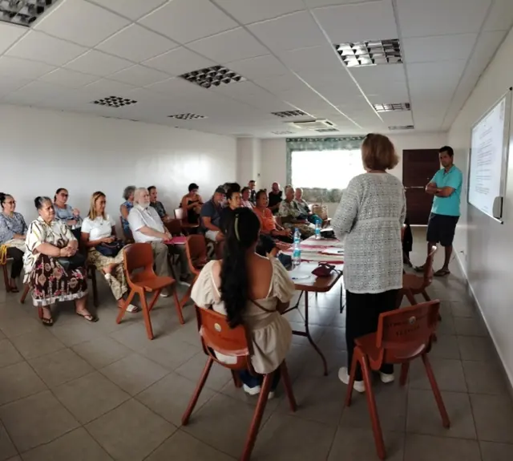
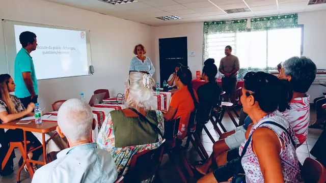
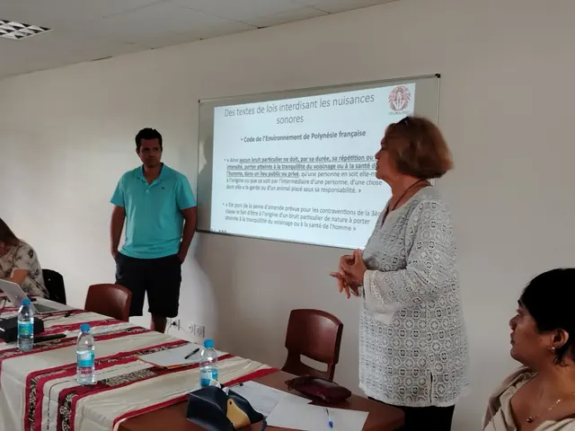
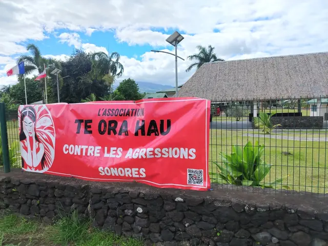

PHOTOS & RENCONTRES · · Taravao
Réunion d’information à Tiaputa, Taravao
Le 24 octobre 2026, notre réunion d’information à Tiaputa, Taravao, a donné lieu à des échanges très riches avec un public particulièrement actif. Les témoignages sur les nuisances subies, souvent empreints d’émotion et parfois difficiles à entendre, ont révélé la détresse vécue par les victimes.
Merci à chacune et chacun pour sa participation et sa confiance. Te Ora Hau remercie également la mairie de Taiarapu-Est pour la mise à disposition de la salle.
Faites glisser les photos à gauche ou à droite, ou utilisez les flèches. Touchez une photo pour l’agrandir.




1 / 5